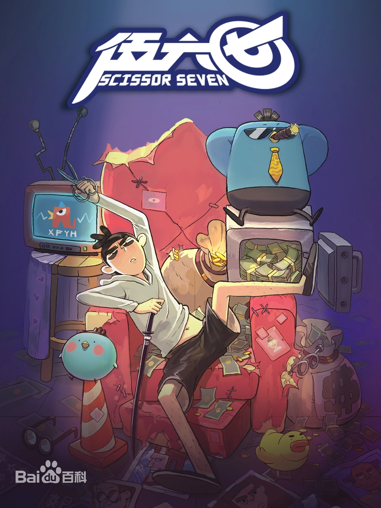
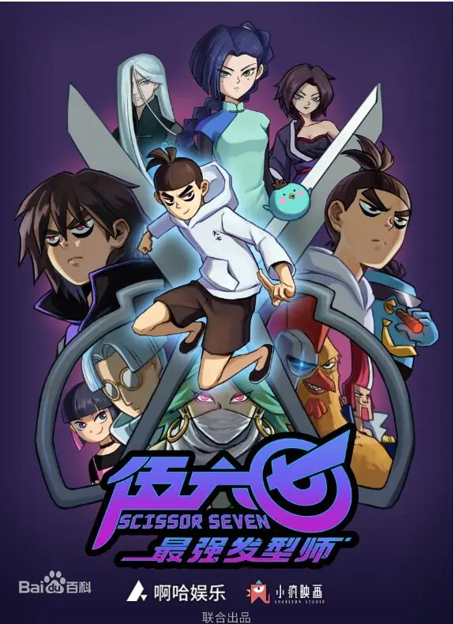
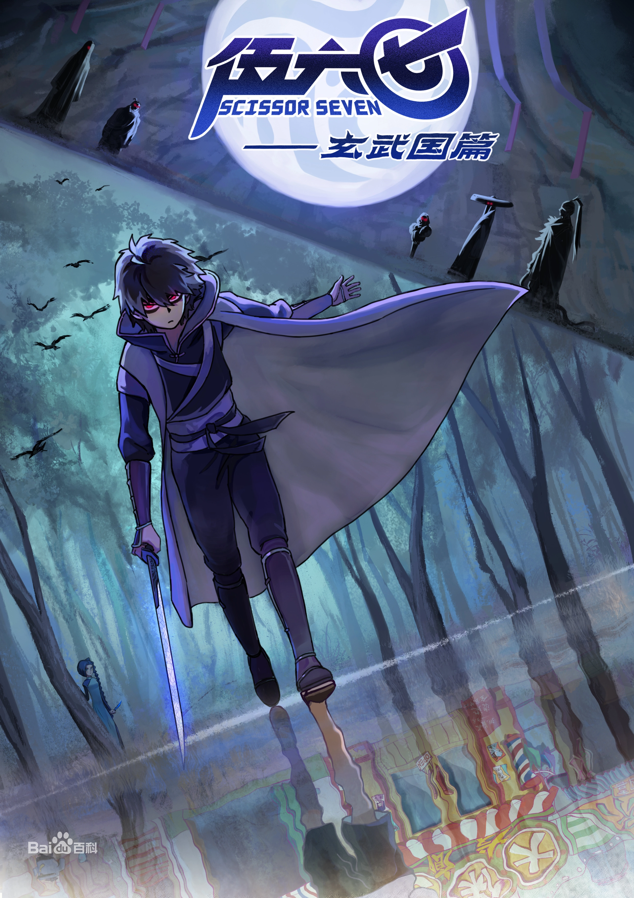
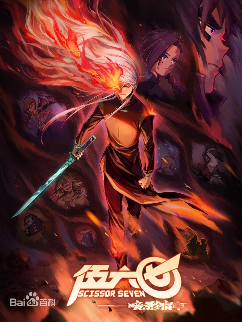

|  | 在某个小岛上，有一个可以伪装成任何东西的廉价刺客，名叫伍六七。平时看上去是个理发师，其实背地里却做着刺客生意。热爱理发事业，喜欢给人剪头发，善用剪刀——剪刀也是他的刺杀武器。由于初入刺客行当，行情十分廉价，因此接到的都是些奇葩的刺杀任务。在执行刺杀任务的过程中，与刺杀对象发生一系列有趣的意外事件。 |
|  | 伍六七在帮助别人和寻找自我的过程中，认识了不同的人，并与不同角色之间发生了有趣的故事，最终用爱与包容化解了仇恨与偏见。 |
|  | 为了保护小鸡岛居民和这里平静的生活，伍六七和他的伙伴大保和小飞开启了去往玄武国的冒险旅程，去寻找身世的真相和解救小岛的办法，等待他们的又将是更多的未知与奇遇 |
|  | 随着伍六七回到玄武国寻找他的身世，亦引起了七大暗影刺客的追捕。然而每一位暗影刺客都带着不同的目的和不同的过去，青凤的阴谋也在此浮出了水面。而此时等待着小鸡岛上的人民，又将是另一个危机，伍六七将如何面对他的抉择？ |